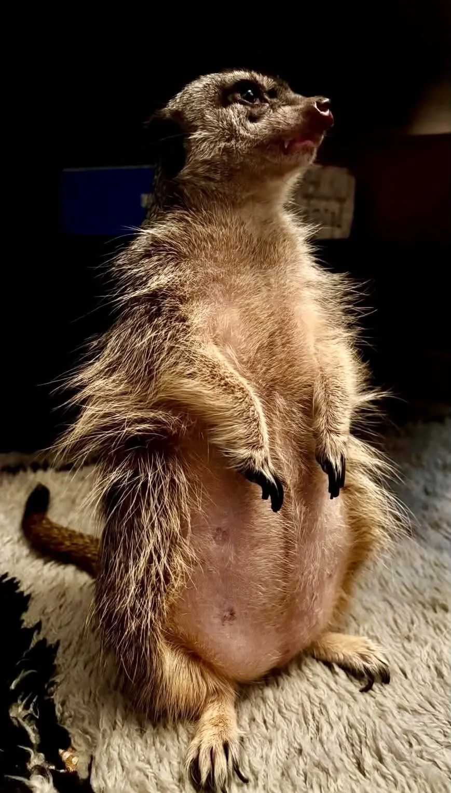
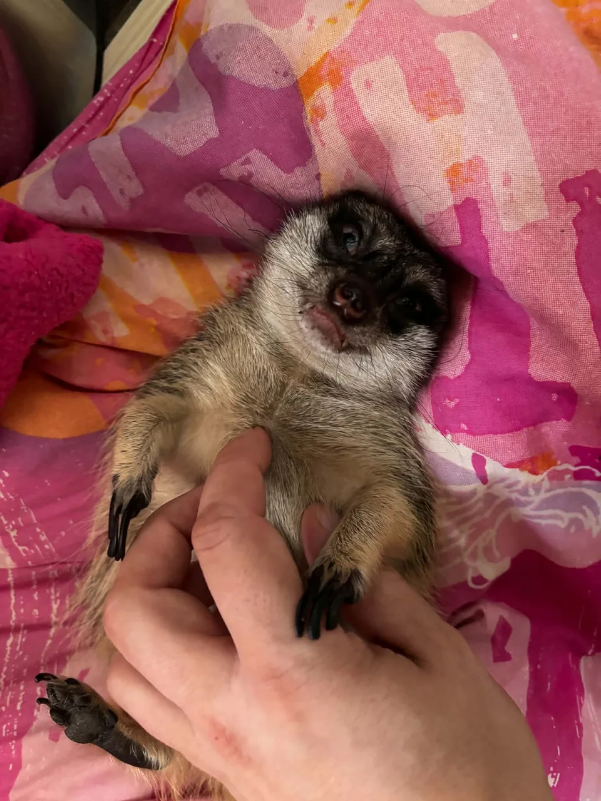
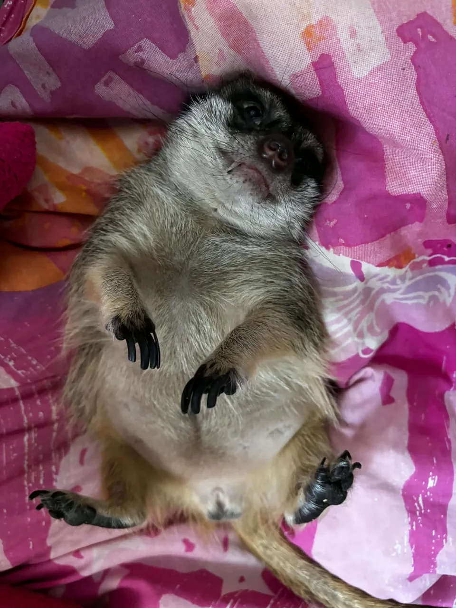

CZŁOWIEK W DOMU? TO TYLKO FUNKCJA POMOCNICZA
W każdej rodzinie jest ktoś, kto pierwszy wie, że sąsiad właśnie odpalił samochód, kurier zbliża się do drzwi, a na parapecie wylądował gołąb. U nas tą osobą jest Tofik. Nie potrzebuje aplikacji, czujnika ruchu ani instrukcji obsługi. Wystarczy mu chwila ciszy, dobry punkt obserwacyjny i mina, która mówi: „proszę nie przeszkadzać, trwa kontrola obiektu”.
Oficjalnie jest surykatką. Nieoficjalnie: prezesem zarządu, kierownikiem ochrony i specjalistą od spraw, których nikt mu nie zlecił. Zawsze ma coś do sprawdzenia. Torbę z zakupami. Nową rzecz w pokoju. Kurtkę zostawioną na krześle. A czasem po prostu miejsce, w którym jeszcze wczoraj była poduszka i z niewiadomych powodów nadal leży spokojnie.
Nie mieszkamy z małym, pluszowym pieskiem. Mieszkamy z czujnym lokatorem, który uważa, że dom bez regularnej inspekcji mógłby się zwyczajnie rozpaść.
decyzje podejmuje szybko, odwołania nie przewidziano
posterunek trwa, gdy w domu dzieje się absolutnie wszystko
najpierw sprawdza Tofik, potem można rozpakować zakupy
uroczy, szybki i zawsze o jeden pomysł przed nami
Ten wpis to domowy felieton oparty na obserwacjach rodziny. Nie jest instrukcją trzymania surykatki ani próbą udowodnienia, że Tofik „myśli jak człowiek”. Gdy odwołujemy się do biologii gatunku, robimy to tylko po to, by nadać tej historii właściwy kontekst.

PIONOWA POSTAWA, POZIOM PEŁNEJ GOTOWOŚCI
Monitoring, który ma wąsy i bardzo własne zdanie
Tofik staje na tylnych łapach tak często, że spokojnie mógłby dostać certyfikat z ochrony perymetru. Samochód na ulicy, cień za oknem, dźwięk kluczy, gołąb przy parapecie — każdy z tych drobiazgów może zostać uznany za sprawę wymagającą natychmiastowego rozpoznania.
To akurat dobrze pasuje do biologii surykatek. W naturze żyją one w grupach i stale skanują otoczenie, a wyprostowana sylwetka pomaga obserwować przestrzeń. Nie znaczy to, że każdy domowy „stój” jest alarmem. U Tofika często jest to po prostu ten sam zawodowy odruch: zobaczyć, usłyszeć, ocenić. Najlepiej zanim ktokolwiek inny w ogóle zauważy, że coś się wydarzyło.
Kontakt, obserwacja i szybka reakcja są elementem życia bardzo społecznego gatunku.
Torby, dźwięki i ruch za oknem przechodzą przez jego dokładną, choć niezamówioną kontrolę.
Nie ma więc co udawać, że relacja z nim to zwykłe „posiadanie zwierzaka”. Tofik jest obecny w centrum codzienności. Kiedy domownicy przechodzą do innego pokoju, on często uznaje, że zebranie zarządu przeniosło lokalizację i trzeba być na miejscu.
DZIAŁ REMONTÓW I ARCHITEKTURY WNĘTRZ
Poduszki mają jedno przeznaczenie: trzeba je przekopać
Jeśli ktoś kocha idealny porządek, czyste doniczki i przekonanie, że ziemia powinna pozostawać w doniczce, powinien dobrze przemyśleć towarzystwo surykatki. Tofik potrafi podejść do poduszki z pasją archeologa, który właśnie dostał informację o zaginionym skarbie. Kopie. Przesuwa. Sprawdza. I nie przyjmuje do wiadomości, że w środku jest tylko wypełnienie, a nie wejście do podziemnego kompleksu.
Doniczki też mają z nim osobną historię. Ziemia wysypana na dywan nie jest dla niego katastrofą. To raczej nowa wersja aranżacji wnętrza, której człowiek zwyczajnie jeszcze nie dojrzał. A gdy do tego dochodzi przypadkowa „wpadka” na panelach albo szybkie ostrzeżenie zębami, bo coś mu nie pasuje, łatwo zapomnieć, że przed chwilą wyglądał jak niewinna maskotka.
Poduszka
dla człowieka: element kanapy; dla Tofika: stanowisko robocze wymagające natychmiastowego rozpoznania
Doniczka
dla człowieka: roślina; dla Tofika: miejsce, które zdecydowanie wymaga sprawdzenia pazurami
Palec
dla człowieka: palec; dla Tofika: coś, co czasem podchodzi zbyt blisko jego aktualnego nastroju
Porządek
dla człowieka: stan docelowy; dla Tofika: temat do twórczej dyskusji
Za tym całym bałaganem nie stoi złośliwość ani „zły charakter”. Kopanie, badanie szczelin i intensywne poszukiwanie są normalną częścią repertuaru surykatki. Dom nie zamienia tego w zachowanie nienaturalne — tylko daje mu bardziej kosztowne dla człowieka cele. W praktyce oznacza to jedno: trzeba mieć cierpliwość, zabezpieczoną przestrzeń i gotowość do sprzątania szybciej, niż by się chciało.


NIE KURTKA, NIE KANAPA — TYLKO LUDZIE
Najważniejszy punkt programu: być blisko
Cała jego kontrola jakości ma jednak drugą stronę. Tofik nie jest zwierzęciem, które znika gdzieś na pół dnia i wraca tylko po jedzenie. Biega za domownikami, sprawdza, gdzie są, i potrafi zostać z nami przy telewizorze, wciskając się pod koc. W jego rozumieniu samotne oglądanie serialu to chyba niepotrzebne ryzyko operacyjne.
To nie jest powód, by robić z niego człowieka w futrze. Surykatki są gatunkiem społecznym, a bliskość z rodziną Tofika jest obserwacją dotyczącą właśnie jego, nie gotowym przepisem dla każdego osobnika. Ale w domu wyraźnie widać, że towarzystwo ma dla niego znaczenie. Wystarczy zmiana aktywności, żeby natychmiast pojawił się obok i upewnił, czy przypadkiem coś interesującego nie dzieje się bez jego udziału.
Tofik ma szeroki repertuar odgłosów i szybko reaguje na zmiany wokół siebie. Nie przypisujemy jednak każdemu dźwiękowi jednego ludzkiego zdania. Badania pokazują, że komunikacja surykatek obejmuje między innymi głosy kontaktowe, alarmowe i strażnicze, a znaczenie zależy od sytuacji. Popularne liczby typu „ponad 30 odgłosów” warto traktować ostrożnie: naukowcy liczą i grupują wokalizacje różnymi metodami.
Ta mieszanka przywiązania, szybkości i absolutnego braku nudy sprawia, że Tofik jest w rodzinie bezapelacyjnym ulubieńcem. Nie dlatego, że zawsze jest łatwy. Właśnie dlatego, że jest sobą w stu procentach — z własnym rytmem, własną opinią i własnym planem na każdy przedmiot, który zostanie bez nadzoru.
ZACHWYT TAK, ROMANTYZOWANIE NIE
Surykatka nie jest zwierzęciem „dla każdego”
Humor nie powinien przykrywać ważnej sprawy. Tofik jest oswojonym przedstawicielem dzikiego, niedomestykowanego gatunku, a nie łatwą alternatywą dla psa czy kota. Jego historia może być ciepła i zabawna, ale nie jest reklamą zakupu surykatki. Za każdą domową anegdotą stoją potrzeby społeczne, aktywność, kopanie, złożone żywienie, zabezpieczenia i dostęp do lekarza weterynarii, który zna ssaki egzotyczne.
Jeżeli ktoś patrzy na takie zdjęcia i myśli: „też chcę taką”, warto najpierw przeczytać nasz wcześniejszy, źródłowy materiał o Tofiku. Opisujemy tam wymagania bez skrótów: środowisko, wzbogacanie, żywienie, zdrowie i bezpieczeństwo. Relacja z jednym konkretnym zwierzęciem nie jest obietnicą, że w innym domu wydarzy się to samo.
Tekst opisuje codzienność jednej rodziny. Wszelkie decyzje dotyczące warunków, żywienia, zdrowia czy legalności utrzymywania surykatki trzeba sprawdzać indywidualnie i aktualnie, z udziałem właściwego lekarza weterynarii oraz odpowiednich instytucji.
KONTEKST I ŹRÓDŁA
Gdzie kończy się żart, a zaczyna odpowiedzialność
To osobisty wpis o Tofiku. Tło biologiczne ograniczyliśmy tu do niezbędnego minimum; pełne omówienie oddzielające obserwacje rodziny od danych o gatunku znajduje się w poprzednim artykule.
- Surykatka w domu: Tofik między naturą a salonem. Źródłowe rozwinięcie tematu zachowania, komunikacji, żywienia, dobrostanu i bezpiecznej organizacji środowiska.
- Smithsonian’s National Zoo — Meerkat. Podstawowe informacje o gatunku, środowisku i zachowaniu społecznym.
- Rauber & Manser (2017), Scientific Reports. Badanie wokalizacji strażniczych i oceny ryzyka u dzikich surykatek.
Tekst osobisty opublikowano 10 września 2026. Zewnętrzne odnośniki sprawdzono tego samego dnia.
KONIEC ZEBRANIA ZARZĄDU
W domu z Tofikiem nie ma nudy. I chyba o to chodzi.
Jest trochę hałasu, trochę kopania, trochę sprzątania i sporo śmiechu. Są też chwile, w których ten mały kierownik ochrony po prostu chce być obok. Tofik nie poprawia nam życia według ludzkiego planu. On je zmienia po swojemu — i właśnie dlatego jest tak ważną częścią rodziny.
WRÓĆ DO BLOGA →